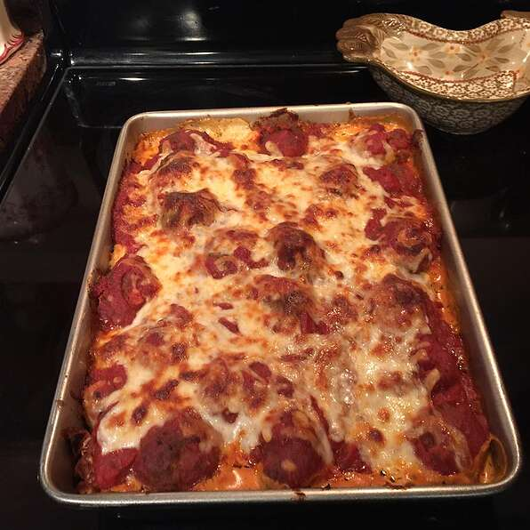

Creamy Meatball Sub Casserole

This is an Italian casserole dish that the whole family will enjoy. It has a creamy and cheesy filling that will have the kids, and everyone else, asking for more.
Ingredients
- 1 lb ground beef
- ⅓
- ¼
- 3 tablespoons grated parmesan cheese
- 1 loaf Italian bread, cut into 1-inch slices
- 1 (8 ounce) package cream cheese, softened
- ½ cup mayonnaise
- 1 teaspoon Italian seasoning
- ¼ teaspoon ground black pepper
- 2 cups shredded mozzarella cheese, divided
- 1 (28 ounce) jar spaghetti sauce
- 1 cup water
- 2 cloves garlic, minced
Directions
- Preheat oven to 400 degrees F (200 degrees C).
- Mix ground beef, green onion, bread crumbs, and Parmesan cheese together in a bowl; form into 1-inch meatballs. Arrange meatballs in a baking sheet.
- Bake in the preheated oven until no longer pink in the center, 15 to 20 minutes. An instant-read thermometer inserted into the center should read at least 160 degrees F (70 degrees C).
- Arrange bread slices in a single layer in a 9x13-inch baking dish. Combine cream cheese, mayonnaise, Italian seasoning, and pepper in a bowl; spread over bread slices. Sprinkle 1/2 of the mozzarella cheese over the cream cheese mixture.
- Combine spaghetti sauce, water, and garlic in a bowl; add meatballs. Pour spaghetti sauce mixture over bread. Sprinkle remaining mozzarella cheese over casserole.
- Bake in the preheated oven until cheese is melted and bubbling, about 30 minutes.